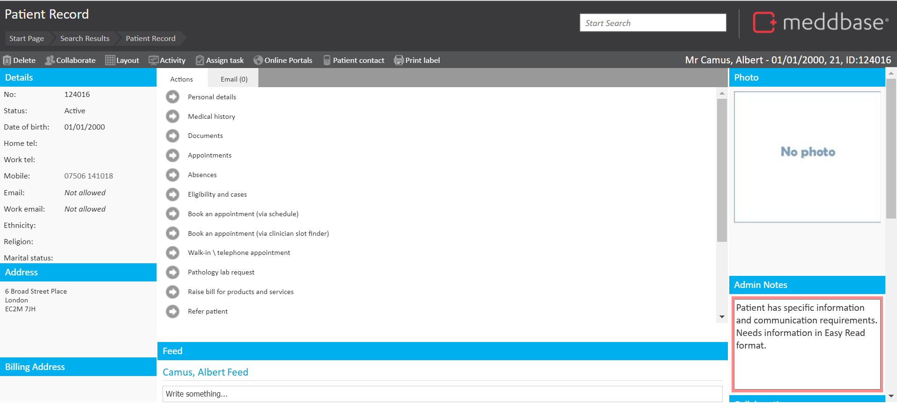
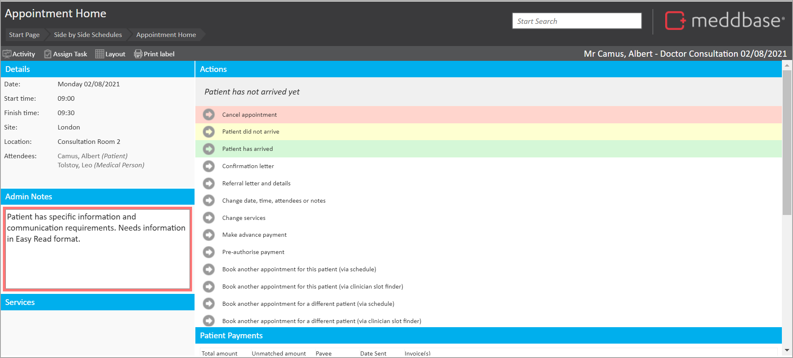

Administrative notes are available in Meddbase across different entities. These administrative notes act as prompts during many processes in Meddbase.
Patients have administrative notes which are set on the patient record and will be displayed when instigating various actions in Meddbase.
This article explains how to find the Admin Notes on the patient record, what you see and where else they are used.
To get to the Admin Notes on the Patient Record, these are the steps:
Upon clicking onto the patient, you will be on the Patient Record.
The Admin Notes are displayed on the bottom right of the screen.

In the Admin Notes field, you can add any relevant information required for the admin team to know. The Admin Notes section automatically saves as you type. So there is no need to worry about losing information.
These Admin notes appear on the left-hand side of the Appointment Home page to ensure the admin team can be prepared for when the patient attends their appointment.

When typing into the Patient Admin Notes section on the record, it will highlight red. These notes will be visible in a pop-up window when booking an appointment via the Slot Finder. You can configure the highlighting of the notes box and viewing of this pop-up window in the slot finder.
This is related to a configuration setting Patient admin-notes highlight. This setting can be updated by you application administrator via Admin > Configuration > Application.